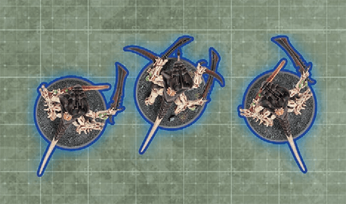
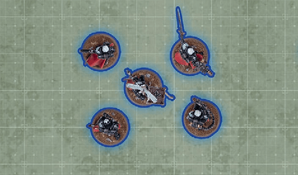
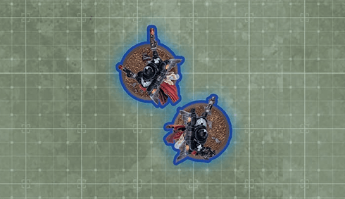
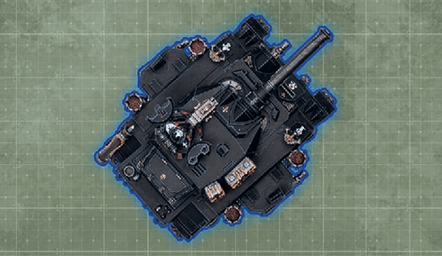

1. Start of Command Phase
ruleRules that are triggered at the start of the are resolved now.
Command Points, Battle-shock and Command phase rules.
Rules that are triggered at the start of the are resolved now.
Both players gain 1 Command Point (CP).
Command Points are a valuable resource you can spend to use stratagems (15). The Gain Core CP step ensures that both players gain 1CP each turn. While these are termed Core CP here, they are Command Points like any other. Other rules sometimes mention ‘Core CP’ when referring to these Command Points.
Command Points are a valuable resource you can spend to use stratagems (15). The step ensures that both players gain 1CP each turn. While these are termed Core CP here, they are Command Points like any other. Other rules sometimes mention ‘Core CP’ when referring to these Command Points.
The must now make one (01.07) for each unit in their army that fulfils one or both of the following conditions:
If a unit was battle-shocked at the start of this step and its battle-shock roll during this step succeeds, it is no longer battle-shocked.




In the (08.03), unless otherwise stated, no more than one can be made by each unit. If for any reason a unit must make a battle-shock roll in this step before one it is required to make for being or at or , that unit does not also have to make the battle-shock roll for being battle-shocked or at or below half-strength.
Rules that are triggered in the (excluding those that are triggered at the start or end of this phase, when gaining Core CP, or by ) are resolved now.
Rules that are triggered at the end of the are resolved now, in the following order:
EXAMPLES
This unit has a of 3 so is not at or , but it is currently , so a must be made for it. If that roll succeeds, the unit will no longer be battle-shocked.
This unit has a starting strength of 10. It has five models remaining, so it is at and a battle-shock roll must be made for it.
This unit has a starting strength of 5. It has two models remaining, so it is below half-strength and a battle-shock roll must be made for it.
This has a starting strength of 1 and a W characteristic of 11. It has 3 wounds remaining, so it is below half-strength and a battle-shock roll must be made for it.
{kind=link}
{kind=link}
{kind=link}
{kind=link}